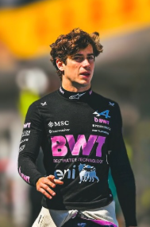

Franco Colapinto
Franco Colapinto
Team: Alpine F1 Team
Team Principal: Flavio Briatore
Number: 21
Nationality: Argentina
Debut: 2026
Born: 27 May 2003
History: Argentine driver Franco Colapinto emerged as one of the most exciting young talents to reach Formula 1 in the mid-2020s. After impressive performances in Formula 2 and junior categories, Colapinto quickly attracted attention for his aggressive overtaking style, confidence, and adaptability. Joining Alpine, he brought fresh energy and strong pace to the team while rapidly building a growing international fanbase. Entering 2026, Colapinto was considered one of the sport’s most promising rising stars.
